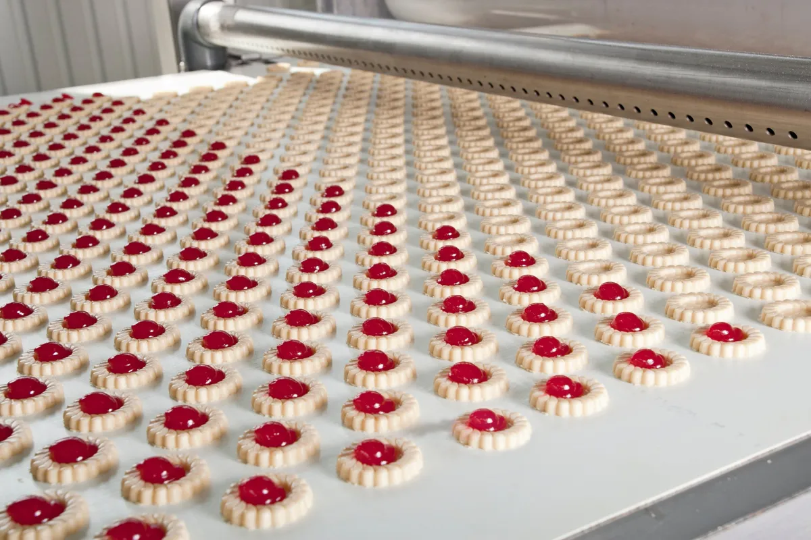
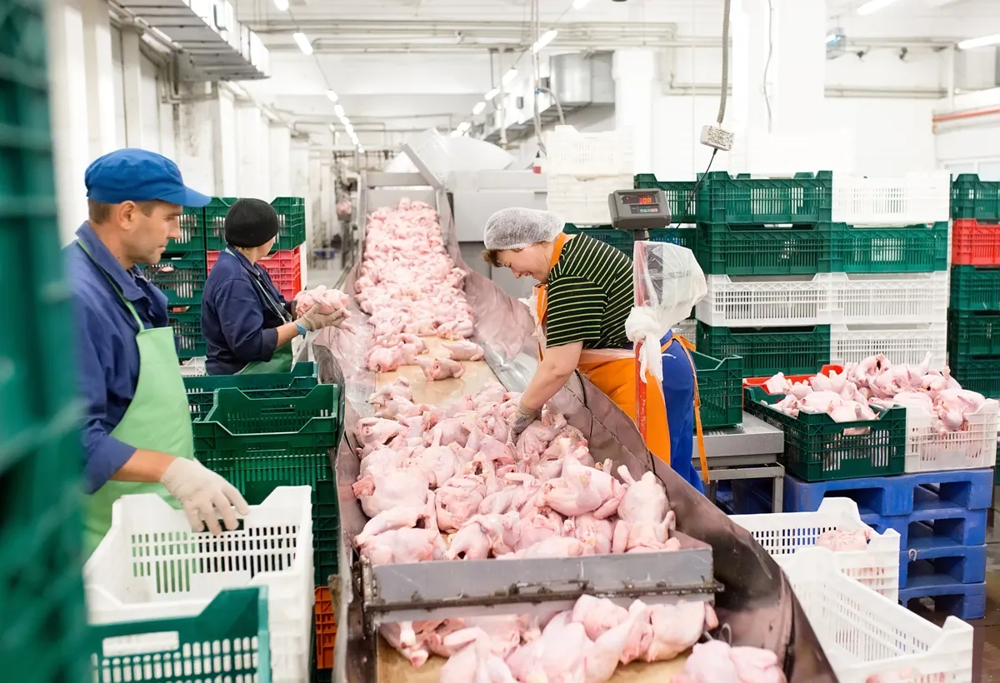
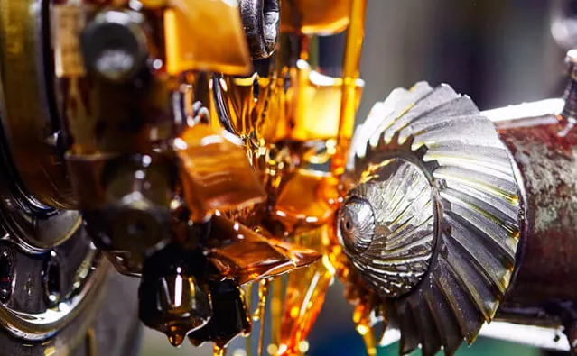
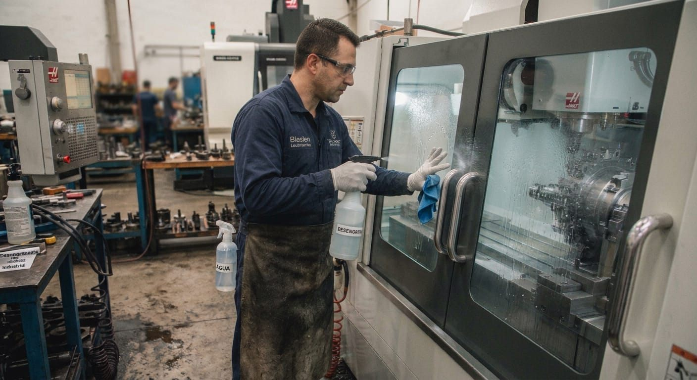
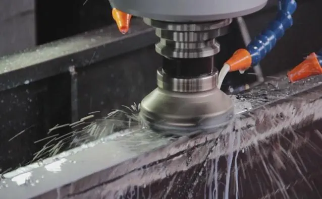
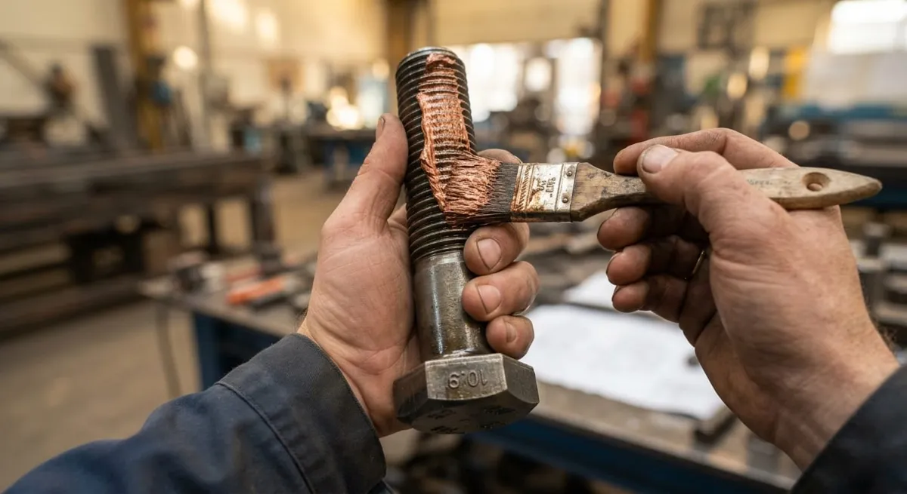
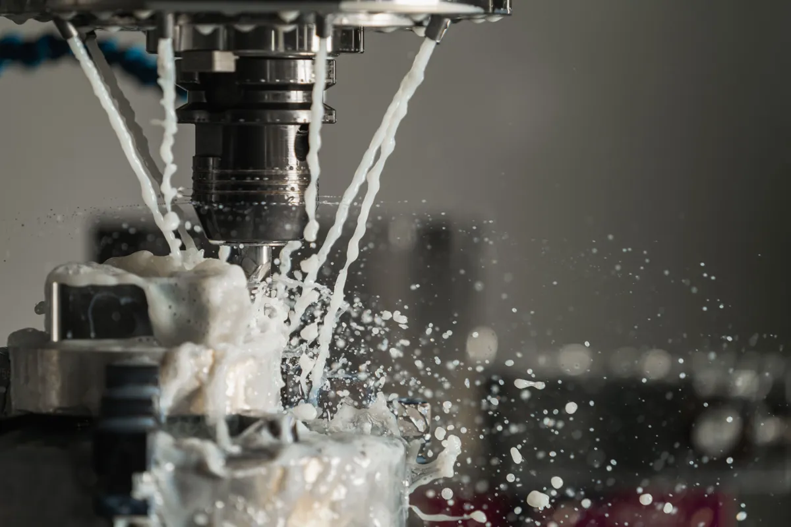

Lubrificantes industriais para empresas que não podem parar.
Desengraxantes, fluidos de metalworking, óleos e graxas especiais para a indústria metalúrgica, alimentícia, de plásticos e florestal, com consultoria técnica antes, durante e depois da venda.



Empresa nova de nome, equipe com estrada.
Uma empresa que conta com profissionais experientes, voltados a contribuir com o crescimento e o aumento de produtividade das empresas. Oferecemos consultoria técnica e acompanhamento pré e pós-venda, visando sempre atender cada vez melhor as necessidades de nossos clientes.
Consultoria técnica
Recomendação baseada na aplicação real: condição de trabalho, temperatura, carga e ambiente.
Acompanhamento pré e pós-venda
Acompanhamos a aplicação em campo e ajustamos a recomendação conforme o desempenho observado.
Parcerias de longo prazo
Relações duradouras, com qualidade e prazo mantidos a cada novo pedido.
Linhas de produto
Cada linha atende uma condição de trabalho específica, da usinagem metalúrgica à lubrificação atóxica em ambiente alimentício.
Catálogo de produtos
35 produtos com nome e especificação para limpeza industrial e metalworking.

Desengraxantes
Desengraxantes à base d'água, com pH ácido, alcalino ou neutro e opção protetiva, e à base de solventes isoparafínicos, hidrogenados ou oxigenados.
Ver os 6 produtos
Metalworking
Óleos de corte integral e solúvel, protetivos, de estampagem, desmoldantes e lubrificantes industriais.
Ver os 29 produtosSoluções por aplicação
Óleos, graxas e pastas indicados conforme o equipamento e a condição de trabalho. A equipe técnica indica o produto.

Graxas e Lubrificantes Especiais
Para redutores, compressores, correntes, rolamentos, motores elétricos, acoplamentos e válvulas.
Ver aplicações
Pastas de Montagem
Pastas anti-tribocorrosão que facilitam a desmontagem de elementos de máquinas em altas cargas.
Ver aplicações
Indústria de Plásticos para Injeção e Extrusão
Lubrificantes para injetoras e cabeçotes giratórios de extrusoras de polipropileno.
Ver aplicaçõesSegmentos atendidos
Distribuidor autorizado Arbuz Química
Distribuidor autorizado da Arbuz Química, indústria de Araras – SP especializada em fluidos para usinagem, conformação e limpeza industrial.
- Certificação ISO 9001:2015
- Linhas Desengraxantes e Metalworking
- Opções biodegradáveis
Perguntas frequentes
Não encontrou sua dúvida? Fale com a gente pelo WhatsApp.
Perguntar no WhatsAppQuais marcas a Blasfen distribui?
Somos distribuidor autorizado da Arbuz Química, indústria com certificação ISO 9001:2015.
Vocês têm lubrificante para a indústria alimentícia?
Sim. A linha de graxas e lubrificantes especiais tem opções atóxicas NSF-H1, indicadas para ambientes com possibilidade de contato acidental com alimentos.
Quais segmentos vocês atendem?
Alimentício, florestal, agrícola, construção civil e industrial/metalúrgico.
Onde fica a Blasfen e que região atende?
A sede fica na Rodovia BR 470, 3187 – KM 136, Navegantes, Rio do Sul – SC. Atendemos o Alto Vale do Itajaí e Santa Catarina.
Como peço uma recomendação técnica?
Pelo formulário da página de contato ou pelo WhatsApp (47) 3300-3220. Informe a aplicação, o segmento e a condição de trabalho.
Precisa de uma recomendação técnica?
Fale com nossa equipe e receba orientação sobre o produto certo para sua aplicação.